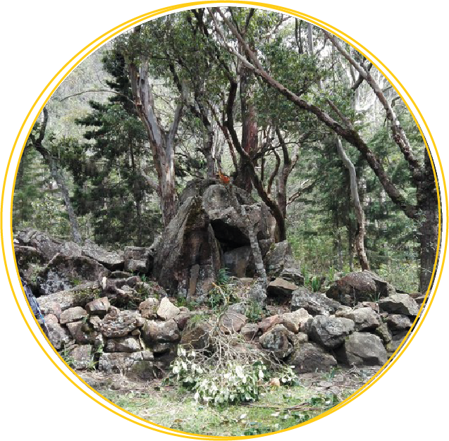

Historia
El Cerro Quitasol es uno de los cerros naturales más importantes del Valle de Aburrá, localizado en
el
municipio de Bello al
norte de Medellín en el departamento de Antioquia, Colombia.
El cerro Quitasol, un sitio ritual sagrado de los antiguos habitantes de Niquias, tiene un sendero
precolonial que se eleva hacia la montaña hasta llegar a parte de la Cima del cerro, y continúa, se
cree,
por todo el continente, ya que parece y desaparece en cortes, siendo un misterio arqueológico.
Ubicación
Se encuentra en la parte norte del valle, y la altura de las montañas que rodean la ciudad de Bellas
supera
los 2500 metros. La principal característica topográfica es la montaña piramidal, de 2880 metros
sobre el
nivel del mar, que es considerada por su impresionante naturaleza como el Cerro Bello. Limita al
norte con
San Pedro de los Milagros, al sur con Medellín, al este con Copacabana y al oeste con San Félix.
Lugares Representativos

Estatua caique Niquía:
Cacique Niquía fue el nombre de una comunidad indígena prehispánica que se asentó en las
tierras que
hoy ocupa el municipio de Bello en el departamento de Antioquia, Colombia.
Esta obra está ubicada cerca de la estación de Metro, por un paso obligado para muchos
caminantes.
Se vuelve así un recordatorio diario de la comunidad "Cacique Niquia", que es como se conoce
a la
comunidad indígena prehispánica que se encontraba asentada en las tierras donde hoy se
encuentra el
municipio de Bello.
Camino de piedra:
El Quitasol —como se le conoce comúnmente entre los bellanitas— esconde el camino indígena
de la
comunidad Cacique Niquía. En las laderas del Cerro se encuentran las huellas de una antigua
civilización que poseía conocimientos de ingeniería. Ello les permitió idear y construir una
ruta
cuya historia yace en medio del misterio: el camino de piedra de los aburráes de Niquía. En
esta
ruta hay un sendero que comienza en el portal del cerro Quitasol, ascendiendo por un camino
de
piedra construida en épocas pre-coloniales, con etapas de trocha, bosques, durante todo el
recorrido
se encontrará varias especies de animales.


Ruinas de los Niquías "Corrales":
Sitio arqueológico y santuario de las antiguas comunidades indígenas de Aburraes que
habitaron
estas tierras, en estas se encuentran el monumento al sol y la terrazas, terrenos planos
contenidos por piedra organizadamente, al parecer las utilizaban para cultivar y poder vivir en
el lugar.
Balcón Natural:
Uno de los mejores balcones naturales del valle de aburra. Una ventana panorámica hacia el
valle como ninguna otra. Una esquina fenomenal para apreciar lo que una vez fue las
serpenteantes curvas del Rio Aburra (Rio Medellin). (Mirador excelente hacia Medellín,
Panorámica a 2600msnm) Uno de los mejores balcones naturales del valle de aburra. Una ventana
panorámica hacia el valle como ninguna otra. Una esquina fenomenal para apreciar lo que una vez
fue las serpenteantes curvas del Rio Aburra (Rio Medellin). (Mirador excelente hacia Medellín,
Panorámica a 2600msnm)